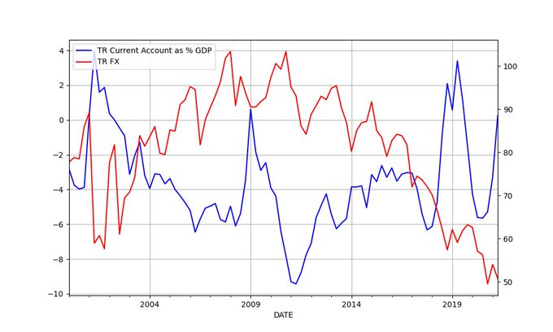

"Lexus reveals new off-road vehicle powered by a hydrogen combustion engine"
"Total Eren has started development of an 8GW green hydrogen megaproject in Chile. Revealed [in Dec 2], the large-scale green hydrogen project dubbed "H2 Magallanes" will utilise 10GW of wind installed capacity coupled with 8GW of electrolysis, a desalination plant, an ammonia plant, and port facilities"
"Hungary will expand its hydrogen technologies to further decarbonise its rail transportation sector as part of a new agreement between Alstom and MOL".
Reshare, 2015 #honk #bumpersticker
![[-]](../2015/P1040430.JPG){kind=link}
"@benphillips76
This video. Wow. Asking Siri what the time is in Palestine"
Sotomayor agrees. [She said] 'If I had my way, I would make pro bono service a requirement"
Privatization in law is probably one of the most harmful places to have it than anywhere else, being able to get "the best defense money can buy" can tip the balance considerably. Then both sides are not equal under the law. Nationalize the law firms! Either that, or introduce a "forced pro bono" where lawyers from private firms must contribute a portion of their time to the public for free.
I have double, triple, quadruple, and quintuple. I might have to do a sextuple version soon.
{kind=link}
{kind=link}
{kind=link}
{kind=link}
MSNBC: "A deep dive by ProPublica identified at least 18 billionaires and another 252 really-rich-but-not-quite-billionaires who got stimulus checks under the CARES Act of 2020. They didn’t cheat to get it — it just so happens that lots of really rich don’t actually receive much of what the rest of us rely on as income. In the case of each of the 18 billionaires, none took an income greater than $75,000, which entitled them to taxpayer funded relief money"
Sad
Voit: "In an article about What We Will Never Know, David Gross rather explicitly acknowledges that prospects for testing ideas about string theory are now an issue of 'faith', with no hope of turning into science any time soon"
Reshare on "AI", by F. Chollet
Remember the "Icebucket Challenge"? 🤣 That was some dumbass shit
The Norwegian mathematician Abel he apparently had a tragic life, he made many discoveries but in his lifetime, but they were not recognized. Now he is a national icon in Norway, there is a huge statue of him in Oslo: but the joke is, since noone knew what he looked like, they made the statue so big that you cannot see his face when you are near it. Arthur Mattuck shared this story during a lecture.
Non-farm payroll YoY increase was 4% for Nov. See graph.
It was Johnson, Biden stole it. In an earlier Prez run the media caught him plagiarizing a speech by Neil Kinnoc, they killed his campaign for that, now he is doing it again, a poke in the eye. "See, here I do it again, and I am President". The media seems to be unfazed though.
"Who is the originator of the phrase Build Back Better, Boris Johnson or Biden?"
Abe said "just look at the map".. this is why.
Ryukyu Islands. And they all belong to Japan..
{kind=link}
"China’s coastline in the East China Sea lacks the deep-water ports needed to service its naval bases located there. Its submarines must operate on the surface until they are able to submerge and dive deep when they reach the area of the Ryukus archipelagoes. If China controlled Taiwan, its submarines would have a far easier exit from Taiwan’s deep-water ports into the Pacific. They could present a new danger for Japan – which is totally dependent on the East Asia sea-lanes for its energy and other raw materials"
Case in point: Japan (former PM Abe's recent warning)
China and France power-equality analysis can help filter out noise, eg the overused "superpower" label.. China is not a superpower, France isn't one either. FR has good capability to be sure, just not SP. The EU however is one (in econ, could be in mil too one day), FR benefits from that. Ergo if China wanted to project power, has to join others. But such neighbors / allies are scant.
Didnt Ukraine execute a drone attack on Donbass (the RU sponsored seperatist region), way back in October? They destroyed some artillery..? I'm not saying this triggered it all, but low intensity action was around in the region..
Kto kogo?
Axios: "Centrist Dems sink Biden's nominee for top bank regulator"
2012: "How to motivate your team
Reshare from 2011. Common Crawl: "We build and maintain an open repository of web crawl data that can be accessed and analyzed by anyone". Cld be useful.
Rifkin: "The term 'consumption' has both English and French roots. In its original form, to consume meant to destroy, to pillage, to subdue, to exhaust. It is a word steeped in violence and until the present century had only negative connotations. [In the past the word was] used to refer to the most deadly disease of the day -- tuberculosis"
"'Whenever a fellow tells me he is bipartisan,' said Harry Truman, 'I know he is going to vote against me'"
No near-term plans to land on Normandy then?
"Infantry takes big hit in British Army reorganisation.. Nearly 20% of the British Army's infantry soldiers are to be lost as a result of the Future Soldier reorganisation"
"Australia will send soldiers and police to the Solomon Islands in a bid to help quell violent protests that have been linked to the Pacific nation’s diplomatic switch from Taiwan to China"
In a general sense "productification", the "last-mile" of tech is useful, but also only the tip of the iceberg. Opportunism is one thing; ideas that benefit society is another.
Xerox did some good innovation as a private company, though the lab was heavily, heavily funded by gov. But even this type of long-term, basic research fell out of favor at companies. There are cases where the founder is a researcher himself, other than that it is more of a hand-to-mouth existence now, whatever is "out there", take it, throw it madly into a bowl hoping something comes out of it. Take battery, put it in a car; hoping it doesn't blow up or catch fire (which sadly, it does).
Apple [and MS] stole the desktop GUI idea from Xerox Parc BTW as admitted to by Bill Gates.
Gladwell: "[Steve] Jobs’s sensibility was editorial, not inventive. His gift lay in taking what was in front of him—the tablet with stylus—and ruthlessly refining it"
H2 Fuel-Cell Vehicles do not require cobalt.
#cobalt #drcongo
#cobalt #drcongo
Automated agro company Iron Ox did away with artificial lights typical vertical farm uses, they use sunlight instead.. In the right place sunlight cld be cheap. But in that case cannot stack up layers bcz upper shelves would block sunlight for the lower shelves..
Still, automated, sealed-off agro is very cool.
Found an old 2011 post on Bezos betting on nuclear fusion. What happened there?
👏 👏 👏 👏 👏 👏
"Leftist candidate Xiomara Castro set to become Honduras's first female president"`
Fizeau, experimental physicist.. "his speciality was refining and confirming other people's results". The speed of light measurement was awesome.
Note Savage's emphasis on "following the inventor's thought process to understand a concept".
"Egypt to gain hydrogen boost with Plug Power providing an 100MW electrolyser"
Was checking out some of my 2016 campaign shares; there was lot of "good Dem-bad Trump" takes, some are still good, here's one with Obama/Trump
![[-]](twimg/FFObWzDXIAQ70tF.jpg){kind=link}
Reshare from 2013
:) via @internetofshit
"@OdedRechavi
Starting the PhD Finishing post doc"
Barbados becomes a republic and removes Queen Elizabeth II as head of state
👏 👏 👏 👏 👏 👏
Some VF companies,
Plenty: Has a 52,000 square foot vertical farming facility..
Aerofarms: Developed an aeroponic growing system that can grow without soil or sun, in any location. Aerofarms has proven to use 95% less water, 390 times more land efficient, 30 crops per season, and even the produce flavor is better.
Iron Ox: The first vertical farm to be run (almost) entirely by robots.
"As the world’s population grows exponentially, our total supply of fruits and vegetables is falling 22% short of global nutritional needs. Traditional farming methods are having difficulties meeting this demand as it faces increasing problems such as water shortage, land scarcity.. In recent years, controlled environment agriculture has experienced a surge of popularity as it presents a compelling solution to all these problems and more. Indoor vertical farming can increase crop yields, overcome limited land area...
Vertical farms are unique in that some setups don’t require soil for plants to grow. Most are either hydroponic, where vegetables is grown in a nutrient-dense bowl of water, or aeroponic, where the plant roots are systematically sprayed with water and nutrients. In lieu of natural sunlight, artificial grow lights are used...
Recent technological advances in the agriculture space allow vertical farms to control every aspect of growing crops. Variables such as light, humidity, and water can all be precisely measured year round. Since crops are no longer reliant on weather patterns, temperatures, or daylight, this means produce can be reliably grown 24/7...
Labor has always been a pain point in agriculture.. Vertical farming can significantly reduce labor needs, and therefore cost, by using robots to handle harvesting, planting, and logistics...
Vertical farms are built to optimize energy conservation by significantly reducing water and energy usage. Studies show that vertical farms use up to 70% less water than traditional farms..
Since indoor vertical farms are completely sealed off from the outside environment, there are virtually no pests. As a result, there is virtually no need for pesticides or herbicides. Food grown is healthier, safer, and certified organic, making it even more appealing to consumers"
They do seem sealed off from outside; which is good no need for pesticides
Woah greenhouses as far as the eye can see.. I dont think i saw so many ghs in one place
Still in vacation mode; this is left-over stuff
"Concentrated solar power (CSP) watchers are keeping an eye on Spain as the country looks to auction a minimum of 200 MW of capacity before 2022.
Sara Aagesen, Spain's Secretary of State for Energy, confirmed the auction would go ahead before the end of this December"
Submarine cables map, as in cables that are laid under the sea
![[-]](twimg/FFDK09LXoAUg3hK.jpg){kind=link}
Examples abound: your mother teaches you how to talk, to walk and how to take a shit. Then the economy takes that finished product, a worker, makes money of off it. Noone pays the mother for her labor.
This is the dirty little secret of the free market; it relies on a lot of free stuff.
The irony is tech relies on gov funded research from academia, and other "freebies" all the time.
Interesting on academia / tech relation.. some replies are informative. Unis make members pay for parking?
High NG prices create an oppo for an H2 based solution here. Steelmaking already uses it; in fact there are no green alternatives other than H2 for their furnaces.
I wonder what other gas, that is clean, can provide that kind of flame? 🤔
"Murano glassblowing model shattered by methane price surge"
Of course it is
"The SALT deduction that benefits the rich is bipartisan"
Base info: Nordstream 2 can deliver 55 billion cubic meters of gas per year. Natural gas contains 5367.27 kWh of energy per cubic meter of gas.
Convert that to Gigawatts,
kwh_year = 55*1e9 / 5367.27
print ("%0.2f" % (kwh_year / (365*24*1000)), 'GW')
1.17 GW
The mega CSP plant in Chile has 110 MW capacity. That means roughly 10 of those plants will equal the Nordstream 2 pipeline. This is not bad at all. Fantastic actually. Fossil f has been sitting there, basting, for millions of years. But we can equal it with tech.
Nordstream 2 is still a major issue.. it's a huge amount of gas supply into Europe. I wonder what the green equivalent to it would be
"@GregDaco
Inflation isn’t just a US thing ... 'Underneath it all, the key theme is #COVID19 disruptions... & desynchronized global recoveries'"
Chocolate pizza by Dominos.. Now I've seen it all.
Nov 23: "Worldwide hydrogen supply chains have been handed a huge boost today with Australia and Germany committing to jointly strengthen bilateral cooperation on hydrogen technology"
Who should play the President in that movie? Jack Black, or Jim Carrey. If he wants to reprise the role in Idiocracy, Terry Crews.
Movie idea: while trying to change the course of asteroid, they make it hit Earth by mistake, end all life.
"NASA has launched a space probe to change the course of an asteroid"
Taspinar: "There are some countries where a single issue can explain pretty much everything that is wrong with its domestic and foreign policy. Turkey’s Kurdish predicament is such a case. Ankara’s historic failure to find democratic solutions to Kurdish ethnic demands has created a deeply insecure and chronically irrational Turkish political culture"
That's abt 3 days worth of consumption.
"DOE To Make Available A Release Of 50 Million Barrels Of Crude Oil From The Strategic Petroleum Reserve"
Relation between current account and currency (for Asia Minor).
from pandas_datareader import data
import datetime
today = datetime.datetime.now()
start=datetime.datetime(2000, 1, 1)
end=datetime.datetime(today.year, today.month, today.day)
cols = ['TURB6BLTT02STSAQ','RBTRBIS']
df = data.DataReader(cols, 'fred', start, end)
df = df.dropna()
plt.figure(figsize=(10,6))
ax1 = df.TURB6BLTT02STSAQ.plot(color='blue', grid=True, label='TR Current Account as % GDP')
ax2 = df.RBTRBIS.plot(color='red', grid=True, secondary_y=True, label='TR FX')
h1, l1 = ax1.get_legend_handles_labels()
h2, l2 = ax2.get_legend_handles_labels()
plt.legend(h1+h2, l1+l2, loc=2)
plt.savefig('currxch.png')

df.corr()
Out[1]:
TURB6BLTT02STSAQ RBTRBIS
TURB6BLTT02STSAQ 1.000000 -0.533232
RBTRBIS -0.533232 1.000000
Strong reverse correlation.
I checked Granger causality, to see the direction of the cause from the data, early time horizon FX effects current account. Later horizon shows account effecting currency. So in a way it's a chicked-and-egg problem, but from Nikolas Müller-Plantenberg research, we know the primary direction is CA->FX. You need to have products to sell so people demand your currency. If you are buying more than you are selling, save other balancing factors, currency will adjust to that.
🤣 🤣 🤣
![[Tweet]](twimg/FE1kRn6XEAA1hDB.jpg){kind=link}
China is in similar power range to France. The large agro-empire past, sometimes ending up as the odd-man-out in the Anglo world is similar as well.
import pandas as pd
df = pd.read_csv('../../2020/07/gdpw.csv')
df = df[df['country'].isin(['United States','France','China']) ]
df['gdp'] = df.gdpcap * df.population
df['mbindex'] = (df.gdpcap * df.gdp)/1e14
print (df[['country','mbindex']])
country mbindex
13 United States 12898.099255
32 France 1117.358002
85 China 1363.010190
"Biden calls for intellectual property protection waivers on COVID-19 vaccines amid Omicron variant concerns"
Hmmmm
Oct 26: "South Africa identifies new coronavirus variant"
With WHO blessing apparently
Oct 19: "Scientists in South Africa are working to reverse engineer the Moderna COVID vaccine"
Black brother in US is very different from an "African-African" in culture. We know this.
Just like there are no "Irish" or "Polish" in US beyond zeroth generation, there are no Turks in Anatolia, there are no Africans in America -- unless brother jumped off the boat (plane) and came to US obviously.
:) Morgan Freeman
"@IEA_SolarPACES
China makes strong commitment to CSP. [China] announces that it will develop at least 20 new CSP projects throughout its territory to achieve carbon neutrality"